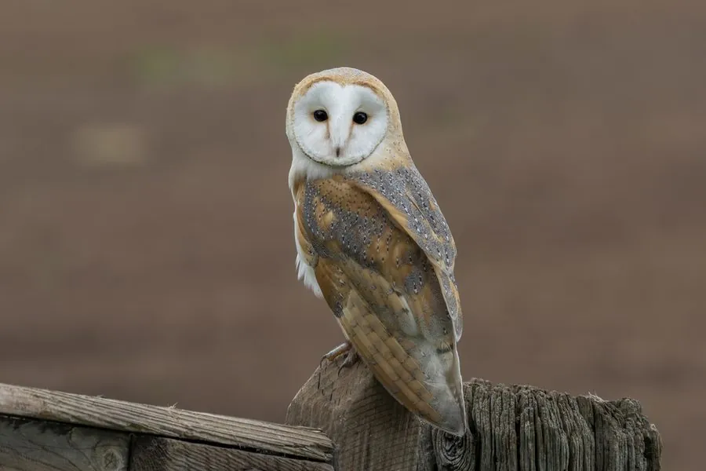

鸟类 · 动物界
仓鸮 Tyto alba

脸盘呈心形、羽色浅白的鸮类，飞行几乎无声，经常在谷仓、教堂和废墟中筑巢，是著名的灭鼠能手。
- 分类
- 门脊索动物门纲鸟纲目鸮形目科草鸮科属草鸮属
- 栖息环境
- 农田、草原、村庄、谷仓与城市废墟，常在建筑物中营巢
- 地理分布
- 除南极外各大洲广泛分布，中国南方和东部有分布记录
- 保护级别
- IUCN 无危（LC）；中国国家二级保护动物
物种志
仓鸮体长 33–39 cm，体重约 250–480 g，翼展 80–95 cm。它的脸部呈白色心形，边缘有一圈浅褐色羽边，眼睛黑色，喙淡粉色；上体金黄至灰褐色，点缀灰色细斑和白色小点，下体白色或淡黄，带少量斑点。羽毛极其柔软，飞行时几乎没有声音。
仓鸮广泛分布于除南极外的各大洲，中国南方和东部有分布记录，北方较少见。它们栖息在农田、草原、村庄、谷仓和城市废墟，主要以田鼠、家鼠等啮齿动物为食，一只仓鸮一年可消灭大量鼠类。繁殖期在树洞、谷仓、教堂钟楼和崖壁缝隙中产卵，每窝 4–7 枚，孵化约 30–34 天。由于农药使用、栖息地减少和交通事故，仓鸮数量在一些地区下降，目前被列为无危物种，中国将其列为国家二级保护动物。
形态与习性
- 食性田鼠、家鼠等啮齿动物为主
- 体长33–39 cm
- 体重约 250–480 g
- 翼展80–95 cm
- 繁殖每窝 4–7 枚卵，孵化约 30–34 天
- 寿命野外约 10–15 年
- 脸盘白色心形脸盘，能帮助收集微弱声音
趣味知识
- 仓鸮的心形脸盘像雷达天线，能帮助它收集极微弱的声音。
- 它的羽毛边缘柔软，飞行时几乎没有声音，便于夜间偷袭猎物。
- 一对仓鸮在育雏期间可以消灭上千只老鼠。
- 仓鸮的叫声不是“咕咕”，而是一连串刺耳的嘶叫。